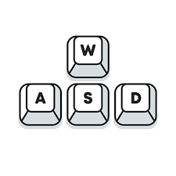
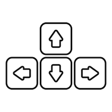
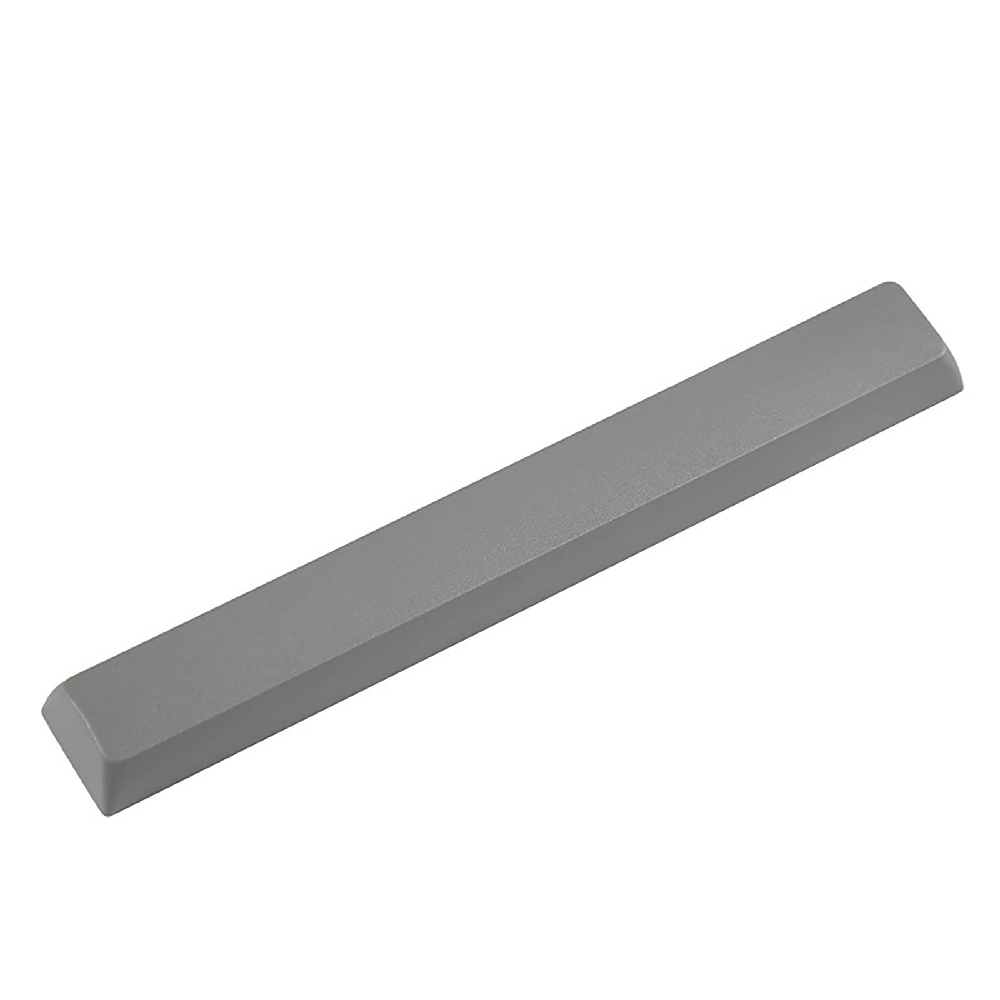
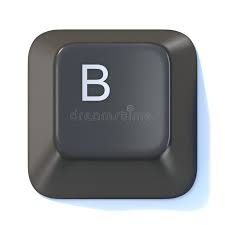

|
| Itzuli atzera |
Hemen Jolasa argibide txiki bat ikusiko duzu.
| Nola mugitu? | Nola Mario da pertsonaia nagusia, teklatu honekin ahal da Mario mugitu, "a" eta "d"-rekin mugitu ahalko da edozein momentuan, baina "a" eta "s" erabiltzeko bakarrik eskaileratan. |
  |
| Nola jauzi | Jauzi egitko, "Space-bar"-rekin egiten da. |
 |
| proijectile botatzeko | "b" teklatuarekin, proijectileak ahal ditugu bota. |
 |